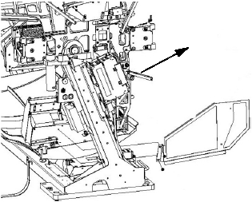
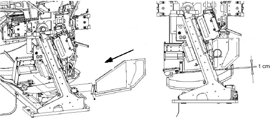
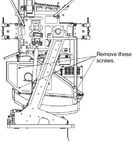

Operating Documentation
Direction 5224328-800, Rev# 5
Dir 5224328-800 LightSpeed 5.X HP60 Limited Access Service
Methods - Adv.
Operating Documentation |
| Required Persons | Preliminary Reqs | Procedure | Finalization |
|---|---|---|---|
| 1 |
| Last Revised: | October 1, 2003 |
| Item | Qty | Effectivity | Part# | Manufacturer | |
|---|---|---|---|---|---|
| 6 mm ball-end hex wrench | 1 | - | - | - | |
| NOTE: | Before beginning this procedure, please read Equipment Service - Gantry, located in the Safety tab of this publication. |
| Condition | Reference | Eff |
|---|---|---|
While it is possible to remove these covers without removing the front cover first, removal of the front cover does make the process easier and eliminates the need to tilt the gantry to gain access for the right side. | - | - |
Remove gantry side covers .
| CRUSH HAZARD. | |
| UNEXPECTED GANTRY ROTATION CAN CAUSE SERIOUS INJURY. | |
| NEVER SERVICE THE GANTRY WITH THE AXIAL DRIVE ENABLED. |
Turn off axial drive enable. See Illustration 1.
Illustration 1: Service Switch Panel

Tilt gantry backward to around -5.0 degrees.
Disconnect the lower right front cover brace from the gantry front cover.
Using a 6 mm ball-end hex wrench, remove four screws securing the cover to the gantry frame.
Tilt gantry forward to around +18.5 degrees.
Referring to Illustration 2, carefully slide the panel out of position through the rear of the gantry.
Reconnect the right lower gantry front cover latch
Illustration 2: Right Side Tilt Regulatory Cover Removal

Verify axial drive is turned off.
Tilt gantry forward to around +18.5 degrees.
Referring to Illustration 3, carefully slide panel into position from the rear of the gantry.
Illustration 3: Right Side Tilt Regulatory Cover Installation

Tilt gantry backward to around -5.0 degrees.
Disconnect right lower gantry front cover latch.
Loosely fasten two front screws, two lock washers, and two washers to the holes at the front edge of the panel (see Illustration 3).
Loosely fasten two rear screws, two lock washers, and washers to the new holes at the rear of the panel (see Illustration 3).
Assure that the clearance indicated in Illustration 3 (1 cm) is met before final tightening of the four screws.
Tighten screws.
Reconnect right lower gantry front cover latch.
Verify axial drive is turned off.
Tilt gantry to 0 degrees.
As shown in Illustration 4, remove the four screws, four lock washers, and four washers fastening the cover to the gantry HEMRC cover and the front cover angle.
Illustration 4: Left Side Tilt Regulatory Cover Removal

Remove the cover by sliding it through the rear of the gantry.
Simply reverse the installation procedure to reinstall the cover.
Re-install gantry front and side covers.
Turn on axial drive enable.